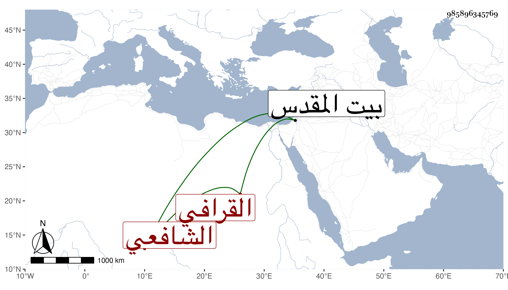

0902Sakhawi.DawLamic.ITO20230111-ara1.EIS1600.985896345769
Biography ID: 985896345769
893
زهير بن حسن بن علي بن سليمان بن سنجر بن عبد الله اليساري نسبة لعرب اليسار القرافي الشافعي أحد رؤس الركابة في الاسطبلات السلطانية كأسلافه واسمه محمد ولكنه بزهير أشهر . ولد سنة ست وعشرين وثمانمائة بباب القرافة ، وحضر دروس الونائي فأكثر وكذا المناوي بل القاياتي وخالط الفقهاء من ذلك العصر وهلم جرا وكان لكثير منهم إليه الميل ودخل البلاد الشامية وحج وزار بيت المقدس واستفتى شيخنا وقد حضر عنده مجلس الاملاء فيمن أنكر عليه استمراره بزيه مع مخالطته للفقهاء فأجابه بما كتبته في فتاويه بل سمعه بعضهم بحضرته وهو يعقد في كلامه القاف على طريقتهم ، فقال له ألا تخلصها قافا فنصره بقوله لو قال في الفاتحة المستقيم بالقاف المعقودة مع القدرة على خلاصها صح بل استفتى جماعة كالعبادي والمقسي والجوجري على من تعرض له بالاساءة وأجابوه كلهم بالشهادة بخيره وحضوره مجالس العلماء وتكلمه في مسائل العلم وتأدبه وإنشاده الشعر ونحو ذلك مما لم أزل أيضا أسمعه . وقد زارني في سنة ست وتسعين واستأنست به وحكى لنا عن الونائي وغيره ممن خالطهم من طبقتهم ومن دونها كأبي البركات الغراقي ولا يخلو من ظرف ولطف .
